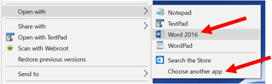
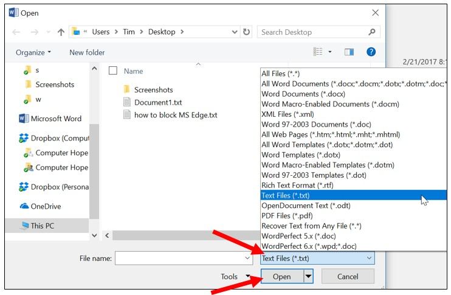

How to open and view a document in Microsoft Word
Microsoft Word is one of the most popular word processing programs used by computer users. Word can open text (.txt) files, rich text format (.rtf) files, XML (.xml) files, web page (.htm or .html) files, and all Word (.doc, .docx, .docm, and more) files.
To open any of the above types of documents in Microsoft Word, you can use any of the options below.
Double-click file
In some cases, you can double click a file to open it in Microsoft Word. However, the file only opens in Microsoft Word if that file type is associated with Microsoft Word. Word documents, like .doc and .docx files, are associated with Microsoft Word by default. However, web page files, text, and rich text format files are often not associated with Word by default, so double-clicking on these files may open in another program.
Right-click file and select program
For any file, you can choose the program to open a file with, including Microsoft Word.
- Right Click the file you want to open.
- In the pop-up menu, select the Open with option.
- If available, choose the Microsoft Word program option in the Open with menu. If Microsoft Word is not listed, select the Choose other app or Choose default program option, depending on the version of Windows on your computer.

- In the window that opens, find Microsoft Word in the program list and select that option. Microsoft Word should open and the file opened within Word.
Open within Microsoft Word
Follow the steps below to open a file from within Microsoft Word.
Word 2007 and later
- Open the Microsoft Word program.
- Click the File tab on the Ribbon and click the Open option.
- If the Open window does not appear, click the Browse option to open that window.
- In the Open window, find and select the file you want to open in Microsoft Word. You may need to click the drop-down list next to the File name text field to change the file type, and then select open.
- Click the Open button at the bottom right of the open window.

Word 2003 and earlier
- Open the Microsoft Word program.
- In the menu at the top, click the File menu and select the Open option.
- In the Open window, find and select the file you want to open in Microsoft Word. You may need to click the drop-down list next to the File name text field to change the file type, and then select open.
- Click the Open button at the bottom right of the Open window.